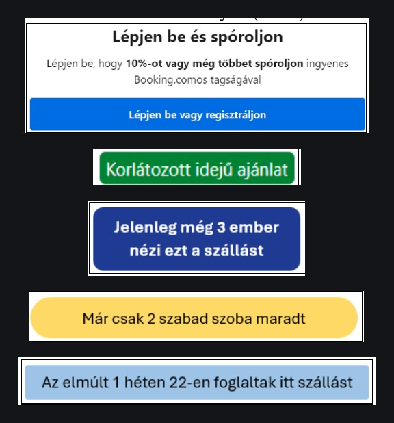

Research
How much website nudges move a booking decision
Relevance. Scarcity, social proof and urgency are the mechanisms behind most conversion work, and this is me measuring how well they actually work, on whom, and where the legal line sits.
Every booking site runs the same set of mechanisms on you. Scarcity, social proof, urgency framing, loss aversion, defaults, anchoring. They are the most reliable conversion tools there are, which is why they are everywhere, and they sit closer to the legal line than most of the people deploying them realise. I wrote my bachelor thesis on how well they actually work, on whether anyone notices them, and on where regulators have drawn that line.
The case that prompted it
In 2020 the Hungarian Competition Authority fined Booking.com 2.5 billion forint. Three violations. Free cancellation was advertised as a feature when at many properties it was only temporarily available, and those bookings cost more than the same stay without it, because the price of the option was folded into the fare. Urgency and scarcity messages appeared at every step of the search and booking flow. And information about which properties accepted the Hungarian leisure card was inconsistent. The fine was calculated against commission revenue from the affected bookings.
The mechanisms, as they appear on the page
These are the five I tested. Scarcity of supply, a time-limited offer, live social proof, recent social proof, and a membership default framed as a loss if you skip it.

How I measured them
A 24 question survey, 213 respondents, anonymous. 72.3% women, the largest group aged 18 to 25 and a second cluster aged 46 to 55. Over 99% travel at least once a year and 61.5% book their own accommodation online. Booking.com was the platform they used most.
The order of the questions carried the method. Asking someone outright whether an urgency message influenced them does not work, because the influence is mostly not conscious and the question invites a no. So the early questions established what they think they look at, and only later did I name the mechanisms and show them the formats above.
Unprompted, almost nobody names them
Asked in an open question which messages or factors had influenced their booking decisions, 9 of 213 mentioned urgency messages. Ten mentioned free cancellation. Everyone else named price, reviews, location and amenities. The practices the regulator fined a company over barely registered as things that happen.
Shown the same messages, they rate them as persuasive
Scarcity of the room count scored highest and live social proof lowest, which is the reverse of what I expected going in. The two strongest are both about something running out, whether that is stock or a discount, while the two weakest are both claims about other people, which also happen to be the easiest ones to disbelieve.
People have to believe it for it to work
Asked how often these messages carry real information, on a scale of one to six, the average was 3.18. People lean towards assuming the claim is not true. And belief turns out to track persuasion almost linearly.
What makes these messages work is not really how they are worded, it is whether people believe them. If nobody believes the claim then the message is just one more thing on the page, and a false one makes the true ones next to it harder to believe as well. Which means the honest version of the tactic also happens to be the one that keeps working.
They put it at nearly half the decision
of the booking decision, by respondents' own estimate, comes down to these messages rather than to the price, the location and the services. People who could not name a single one of them ten minutes earlier.
Where the two regulators differ
Comparing the Hungarian and Dutch responses to the same company is the useful part. The Dutch authority issued guidance in 2020 on online commercial practices that influence consumer decisions, but did not directly address emotional, urgency-based messaging. Foreign authorities have generally examined whether a claim is misleading and pushed for transparency. The Hungarian decision went further and treated commercial practice built on psychological pressure as harm to consumer welfare in itself, which at the time was unusual internationally.
Conclusions
The first thing to say is what this study cannot do: it was a survey, so people were rating messages that I had shown them and asked them to think about, which is nothing like a person booking a trip with their own money. Survey conditions make people more deliberate than they are in real life, and they can only report the influence they are aware of, which the unprompted question had already shown is not much. The honest measurement of a button or a message is on a live page, with real traffic split between two versions.
What the research did give me is a clear picture of the mechanisms and of where the legal line runs, which turns out to be about whether the claim is true rather than whether the technique is used at all. Only two rooms left is fine to show if two rooms are left. The enforcement in the Booking.com case did not land on urgency messaging existing. It landed on claims that were not accurate and terms that were not what they appeared to be.
It also pointed me at what I do now. Writing it is what made me want to measure these things properly instead of asking people about them, and at AirHint I get to, with A/B tests on the real page and real traffic.
Sources: GVH decision VJ/17-110/2018 · ACM, Guidelines on Protection of the Online Consumer, 2020